LabTalkを使いましょう
Tutorial-Get-Started
概要
LabTalkはOriginのスクリプト言語です。スクリプトを記述してインポートやデータ解析、グラフ作成や出力を行うことができます。LabTalkスクリプトは、スクリプト/コマンドウィンドウ内で独立して実行したり、メニュー、ツールバー、グラフィックオブジェクト(ボタン、テキスト、線、矢印、長方形など)の背後で実行させたり、ダイアログ内に設定して一緒に実行したりできます。
LabTalkスクリプトは、LabTalkのインタプリタにより受け取られ、解釈･実行される、ひとまとまりのLabTalkテキストのことです。LabTalkスクリプトは、1つ以上のプログラミングステートメントで構成され、それぞれに割り当てられた操作を実行します。
LabTalkプログラミングの構文には次の種類の要素があります。システム変数、コマンド、関数、マクロ、オブジェクト、Xファンクション。
- ステートメントはセミコロン;で区切ります。
- スクリプトは大文字と小文字を区別しません。
学習内容
このチュートリアルでは、さまざまな要素を持つ基本的なステートメントと、OriginでLabTalkスクリプトを実行するさまざまな方法を学びます。
ステップ
スクリプトウィンドウからスクリプトを実行
スクリプトウィンドウはLabTalkスクリプトの実行を行う追加機能を備えたテキストエディタです。単一行または短いスクリプトを実行する場合に最も有用です。スクリプトウィンドウは子ウィンドウではないため、プロジェクトの一部として保存されません。
- メニューからウィンドウ：スクリプトウィンドウを選択（もしくはAlt+Shift+3を押す）してスクリプトウィンドウを開きます。
- スクリプトウィンドウの上部にある編集メニューをクリックします。スクリプトの実行がチェックされていることを確認します。
- 次のコマンドをコピーしてスクリプトウィンドウに貼り付け、Enterキーを押すと実行されます。
type "Hello World"
コマンドはスクリプトウィンドウに文字列を出力します。Hello Worldは次の行に出力されます。; は実行を示すために最後に自動的に追加されます。
- 再度実行するには、カーソルを ; の前の任意の場所に置き、Enterキーを押します。
Note: カーソルを ; の後ろに置いて Enterキーをした場合、スクリプトは実行されません。Originは新しい行を開始します。カーソルはその下の新しい行に移動するだけです。
- 以下の複数行のスクリプトをコピーして、スクリプトウィンドウに貼り付けます。
- 3行全てを選択してEnterキーを押すことで一括で実行できます。スクリプトにより4つの列を持つ新しいワークブックが作成され、ワークブック名(文字列レジスタ%Hに保存されています)と列数(置換表記$(wks.ncols)に保存されています)をスクリプトウィンドウに出力します。
newbook; //Xファンクション
wks.ncols=4; //wksオブジェクトのncolsプロパティ
//コマンドを -b スイッチオプションと一緒に入力する。これによりOKボタンのあるメッセージボックスが表示される
//%Hはウィンドウ名の文字列レジスタ
type -b "%H内に$(wks.ncols)列あります。";
Note: スクリプトウィンドウで複数行のスクリプトを手動で入力したい場合は、スクリプトの最後に;を追加し、Enterキーを押してスクリプトが実行されないようにしてください。
場合によっては、スクリプトを複数行で記述した方が明確になることがあります。そのような場合には、末尾に ; はまだ付きません。不完全なスクリプトを実行せずに新しい行を開始するには、Ctrlキーを押したままEnterキーを押します。これにより、実行せずに新しい行が開始され、末尾に ; は追加されません。例えば、以下のforループは複数行で記述する方が適切です。
- 次の4行のスクリプトを1行ずつ入力してください。各行の末尾でCtrl + Enterキーを押して、新しい行を開始してください。
for(ii=1; ii<=wks.ncols; ii++) //forループ
{
wcol(ii)=data(ii, ii+10); //wcol() 関数、data() 関数
}
- すべての行を選択し、Enterキーを押してスクリプトを実行します。
 | スクリプトウィンドウは長いスクリプトを書くのには適しません。ただし、実行を一時停止してスクリプトの作成と編集を行うことは可能です。スクリプトウィンドウ内の編集メニューを選択し、スクリプトの実行のチェックを外します。スクリプトウィンドウは純粋なエディタになります。編集後、再度メニューの編集：スクリプトの実行にチェックを入れ、全ての行を選択してEnterキーを押すとスクリプトが実行されます。
|
コマンドウィンドウからスクリプトを実行
コマンドウィンドウはスクリプトを実行するもう一つの場所です。スクリプトウィンドウが実行機能を備えた純粋なテキストエディタである一方、コマンドウィンドウは次の機能を備えています。
- >>プロンプトが表示され、プロンプトで入力されたすべてのコード（複数行のスクリプトを含む）を実行します。
- スクリプトの記述に役立つコマンドと関数を自動補完します。
- コマンド、関数、変数、文字列などのキーワードの色分けして表示します。
- 上下キーで前のコマンドと次のコマンドを呼び出して実行できます。
- 履歴タブで実行履歴を表示します。履歴タブでスクリプトを実行することもできます。
- コマンドウィンドウを閉じて再度開いても、履歴は保持されます。右側のパネルの内容は同じOriginセッションでのみ保持されます。
コマンドウィンドウは、複数行のスクリプトを編集するのには向いていません。例えばカーソルが;の後にあっても、Enterキーを押すとその行が実行されます。コマンドウィンドウで新しい行を開始するには、常にCtrlキーを押しながらEnterキーを押す必要があります。スクリプトを1行ずつ実行した後は、出力をクリーンアップしてスクリプトをogsファイルとして保存することはできません。
ユーザは必要に応じてどちらのウィンドウからスクリプトを実行するか選択できます。
スクリプトウィンドウ部分と同じスクリプトを試してみましょう。
- メニューからウィンドウ：コマンドウィンドウを選択（もしくはAlt+3キーを押す）してコマンドウィンドウを開きます。
- >>プロンプトの後にtを入力すると、tで始まるすべてのLabTalkコマンドとXファンクションがドロップダウンリストに表示されます。
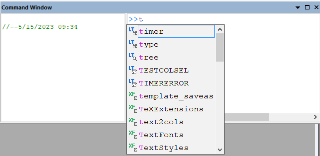
- リスト内のtypeまで下矢印キーを押し、Enterキーを押すとコマンドが選択されます。または、typeダブルクリックして選択します。typeはLabTalkコマンドなので、色つきで表示されます。
- type "Hello World"となるように入力を続けます。文字列も色付きで表示されます。
- Enterキーを押して実行します。Hello Worldは次の行に出力されます。コマンドの最後に ; は追加されません。コマンドは左側の履歴タブに出力されます。
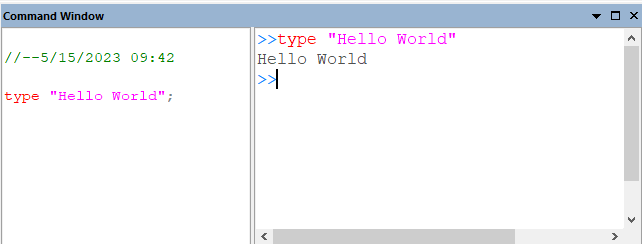
- 新しい>>の後にカーソルを置いて、上矢印キーを押すと、type "Hello World"が再度読み込まれます。Enterキーを押して実行します。
- 履歴タブのtype "Hello World"行にカーソルを置き、Enterキーを押すと同様に実行されます。
- また既に実行された >>行のどこかにカーソルを置き、Enterキーを押すと同様に実行されます。
- 本ページのスクリプトウィンドウセクションの複数行スクリプトをコピーし、コマンドウィンドウで>>の後にカーソルを置いて貼り付けます。
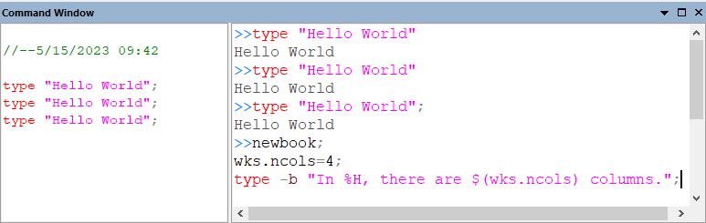
- Enterキーを押します。スクリプトの範囲を選択する必要はありません。4列の新しいワークブックが作成され、ブック名と列数のポップアップメッセージが表示されます。
スクリプトをOGSファイルとして保存して実行
OriginのLabTalkスクリプトは、今後使用するために.ogsファイルとして保存することができます。
OGSファイルはセクションと呼ばれるブロックからなり、各セクションの先頭に[セクション名]が付きます。OGSファイルの先頭にセクション名のないスクリプトもあります。
Run LabTalkオブジェクトの2つの方法でOGSファイル内のスクリプトを実行できます。
Note:
- スクリプトは新しい [セクション名] （またはreturnステートメント）にたどり着くと終了します。
- .ogsはスクリプト内でスキップできます。
- .ogsファイルがユーザファイルフォルダに保存されていない場合は、フルファイルパスをスクリプトに記述する必要があります。
OGSファイルを保存して実行する例を以下に示します。
- 以下のスクリプトをコピーして、空のスクリプトウィンドウに貼り付けます。
type -b "HELLO WORLD";
[Section1]
type -a "Hello";
[Section2]
type -a "World";
- スクリプトウィンドウのメニューからファイル[テキスト形式]：新規保存をクリックしユーザファイルフォルダにTest.ogsとしてスクリプトを保存します。
- スクリプトウィンドウで新規の行を開始し、次のテキストを入力してEnterをクリックします。
run.file(Test) //もしくは run.file(Test.ogs)
- OKをクリックして”HELLO WORLD”と表示されたボックスを閉じ、次のテキストを新しい行に入力してEnterを押します。
run.section(Test, Section1) //もしくは run.section(Test.ogs, Section1)
| OGSファイルはOriginに組み込まれているコードビルダで書くのが簡単です。メニューから表示：コードビルダを選択するか、標準ツールバーのコードビルダボタンをクリックして開きます。次に、コードビルダ内のメニューからファイル：新規を選択し、LabTalk Script Fileを選択してOGSファイルを作成します。
|
ボタンからスクリプトを実行
カスタムルーチンツールバーボタンから
デフォルトでは、OriginはCustom.ogsファイル内のスクリプトを実行するために標準ツールバー上に1つのツールバーボタン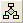
を予約しているため、ユーザーはツールバー ボタンを追加するプロセスを実行することなく、ファイルに簡単にスクリプトを配置できます。
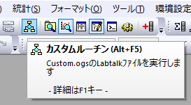
- カスタムルーチンボタンをクリックすると、このツールバーボタンがどのように機能するかについての情報が表示されます。
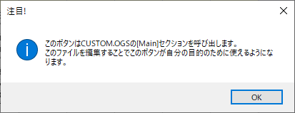
- OKをクリックして閉じます。
- Ctrl + Shiftキーを押しながらカスタムルーチンボタンをクリックすると、コードビルダでCustom.ogsファイルが開かれます（Note: システム変数@KCKを設定して、Ctrl + Shiftキーのデフォルトの動作を変更することができます）。
- [Main]内のスクリプトを削除し、次の内容に書き換えます。
newbook;
wks.ncols=4;
type -b "In %H, there are $(wks.ncols) columns.";
- 保存ボタンをクリックします。
- コードビルダを閉じるか最小化してOriginメインワークスペースに戻ります。
- ツールバーボタンをクリックします。
4列を持つ新規のワークブックが作成され、メッセージボックスにブック名と列数の情報が表示されます。
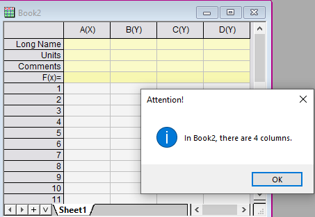
ユーザ定義ツールバーボタンから
このセクションでは、LabTalkスクリプトを実行するためのユーザー定義ツールバーボタンを作成する例を示します。
- 「スクリプトをOGSファイルとして保存して実行」の章でユーザファイルフォルダに保存したTest.ogsファイルを使用します。
- スクリプトウィンドウとコマンドウィンドウを閉じます。
- メニューから表示：ツールバー...をクリックして、ツールバーのカスタマイズダイアログを開きます。
- ボタングループタブに移動し、 グループセクションでUser Definedを選択します。これは、あらかじめ用意された10個のボタンを含むボタングループです。
- 任意のボタンを選んでください。例えば、7番目の実行ボタンを選択します。
- 設定...ボタンをクリックして、ボタンの設定ダイアログを開きます。
- ファイル名ボックスの右側にある一覧ボタンをクリックし、ユーザファイルフォルダに作成したTest.ogsファイルを選択します。
- セクション名にSection1と入力します。
- ツールチップテキストに "type hello" と入力します。
- 他にも、どのウィンドウでボタンを有効にするか、引数を必要とするセクションの引数リストなど、多くの設定がありますが、ここでは使用しません。
- OKをクリックして設定を適用し、ボタンの設定ダイアログを閉じます。
- ボタンをOriginワークスペース（カスタマイズダイアログの外）にドラッグするか、現在のツールバー内の目的の場所にドラッグします。その後カスタマイズダイアログを閉じます。
- 実行ボタンがOriginインターフェイスでフローティング状態になります。
- ボタンの上にマウスを重ねます。ツールチップにはrun type helloと表示されます。
- クリックするとtest.ogsファイルのsection1が実行されます。
スクリプトウィンドウが開かれ、テキスト"Hello"が入力されます。これはtypeコマンドで -a スイッチを使用すると、文字列を強制的にスクリプトウィンドウに出力するためです。
- 実行ボタンをドラッグして、既存のツールバーにドッキングできます。
グラフウィンドウのユーザ定義ボタンから
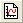
ボタンをクリックして空のグラフを作成します。
- 空白の部分を右クリックしてコンテクストメニューからテキストの追加を選択し、ラベルとしてRun2と入力します。
- テキストオブジェクトを選択し、右クリックしてプロパティ...を選択するとテキストオブジェクトダイアログが開きます。
- プログラミングタブに移動します。
- のあとでスクリプトを実行でボタンアップを選択し、スクリプト編集ボックスに次のスクリプトを入力します。
run.section(Test, Section2);
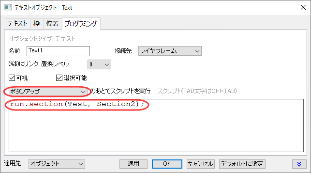
- これで、テキストラベルがボタンになりました。Run2ボタンをクリックしてスクリプトを実行します。
テキストWorldがスクリプトウィンドウに出力されます。
- ボタンを右クリックしてコンテキストメニューを表示し、プロパティを再度変更することはできません。
- ボタンのスクリプトを変更するには、Altキーを押しながらボタンをダブルクリックして、プログラミングタブに直接移動します。
- ツールバーボタンはOGSファイルからのみスクリプトを実行できますが、このボタンは複数行スクリプトを実行できます。ダイアログに次のスクリプトを入力します。
type "current window is %H";
type "current folder is %@F";
type "current project is %G";
- テキストタブに移動し、Run2をInfoに変更してOKをクリックします。
- ボタンの名前がInfoに変更されます。クリックします。
現在のウィンドウ、フォルダ、プロジェクトの情報がスクリプトウィンドウに出力されます。
| Alt +ダブルクリックでボタンのテキストオブジェクトダイアログを開く方法の他、メニューの編集：編集モードですべてのオブジェクト（ボタン、ラベル、グラフィックオブジェクト）を編集する方法もあります。これは、現在および将来のセッションのすべてのウィンドウに適用されます。これで、テキストを右クリックしてプロパティを選択できます。編集モードを終了するには、メニューの編集：編集モードを再度選択することを忘れないでください。そうでないと、全てのOrigin内のグラフは次のように表示されます。
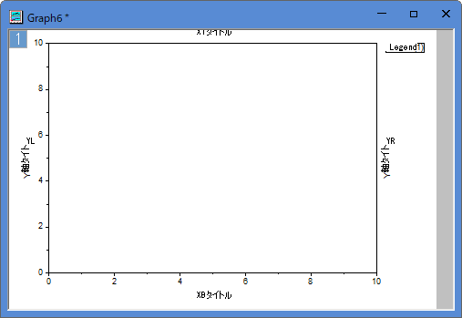
Note: 編集モードはOrigin 2017より前のバージョンではボタン編集モードという名前です。
|
ユーザー定義メニューからスクリプトを実行
OriginはLabTalk Scriptを実行するためのカスタムメニューを作成することができます。
- メニューから「環境設定：カスタムメニュー・オーガナイザ..」を開きます。
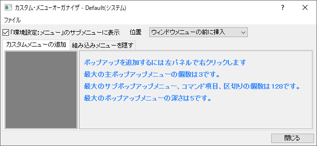
- カスタムメニューの追加タブで、左パネルを右クリックして新しいメインポップアップを選択します。
- ポップアップテキストの名前をMyToolsに変更します。これはOriginワークスペースのウィンドウメニューの前に表示されるメニューになります。
- 左側のMyToolsを右クリックして、項目の追加を選択します。
- 項目テキストの名前をNew Sheet with Dataに変更します。
- 次のLabTalkスクリプトを入力します。
newsheet; //新規のシートを追加
col(A)=data(1,100);//列Aに値1, 2, ...100を入れる
col(B)=normal(100)*2+5; //列Bに平均5、標準偏差2の100個のランダムな数値を入れる
- 閉じるボタンをクリックします。
- 変更を以下のファイルに保存しますか？ Defaultというプロンプトが表示されます。はいボタンをクリックします。
MyToolsメニューがウィンドウメニューの前に追加されます。
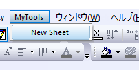
- ワークブックウィンドウがアクティブな状態で、メニューのMyTools：新規のシートをクリックします。
- 新しいシートが追加され、列Aと列Bにデータが入力されます。
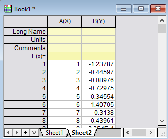
| カスタムメニューオーガナイザ内のファイル：削除メニューを選択して、変更されたdefaultメニューを削除することができます。または、メニューを作成した後、ファイル：名前を付けて保存を選択して、defaultとは異なる名前で保存します。その後「環境設定：メニュー」からカスタマイズされたメニューを選びます。
|